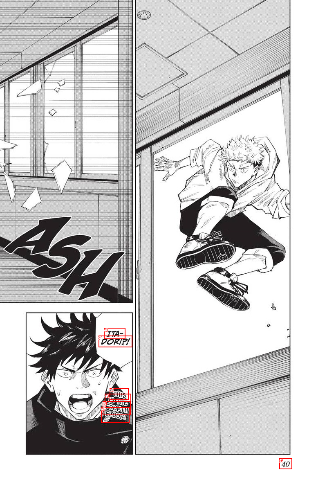
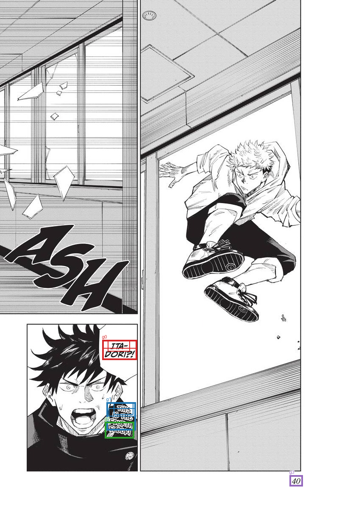

Saved TextExtractionPipeline groups, already filtered and joined. No OCR, filtering, or joining is run by diagnostics. References are comparison only; order is spatial.
Transcript TXT · All candidates and results JSON
ITA- DORI?! THIS IS THE FOURTH FLOOR! 40


| Group | OCR IDs | Joined text | Target index | Reference text | Similarity |
|---|---|---|---|---|---|
| g0 | c0, c1 | ITA- DORI?! | 0 | ITADORI?! | 1.0 |
| g1 | c2, c3, c4 | THIS IS THE FOURTH | 1 | THIS IS THE FOURTH FLOOR! | 0.857 |
| g2 | c5 | FLOOR! | |||
| g3 | c6 | 40 |
[]
[]
[]
[
{
"id": "c0",
"text": "ITA-",
"score": 0.9986625909805298,
"box": [
254.0,
801.0,
306.0,
828.0
]
},
{
"id": "c1",
"text": "DORI?!",
"score": 0.9987290501594543,
"box": [
241.0,
820.0,
323.0,
848.0
]
},
{
"id": "c2",
"text": "THIS",
"score": 0.999821662902832,
"box": [
268.0,
948.0,
314.0,
977.0
]
},
{
"id": "c3",
"text": "IS THE",
"score": 0.964501678943634,
"box": [
256.0,
962.0,
320.0,
996.0
]
},
{
"id": "c4",
"text": "FOURTH",
"score": 0.9998775124549866,
"box": [
251.0,
980.0,
319.0,
1014.0
]
},
{
"id": "c5",
"text": "FLOOR!",
"score": 0.940851628780365,
"box": [
247.0,
994.0,
316.0,
1033.0
]
},
{
"id": "c6",
"text": "40",
"score": 0.9999950528144836,
"box": [
683.0,
1120.0,
714.0,
1146.0
]
}
]